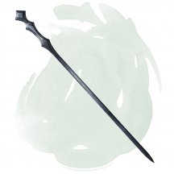
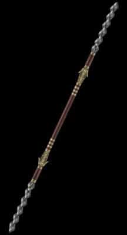
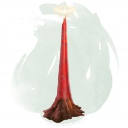
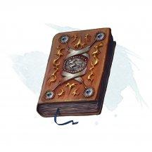

- Посох, очень редкий (требуется настройка заклинателем)
- Рекомендованная стоимость: 5 001-50 000 зм
Вы получаете бонус +1 к броскам атаки и урона, совершённым этим магическим посохом.
Этот посох имеет 10 зарядов. Держа его, вы можете действием израсходовать 1 или более зарядов посоха, для накладывания одного из следующих заклинаний, используя свою Сл: изгнание [banishment] (4 заряда), мерцание [blink] (3 заряда), туманный шаг [misty step] (2 заряда), создание прохода [passwall] (5 зарядов) или телепортация [teleport] (7 зарядов).
Посох восстанавливает 1к6 + 4 израсходованных заряда ежедневно на рассвете. Если вы израсходуете последний заряд, бросьте к20. Если выпадет «1», то посох навсегда исчезает.
Магические предметы
Официальные материалы от Wizards of the Coast и от издательств, поддерживаемых этой компанией.

- Посох, очень редкий (требуется настройка Волшебником, Колдуном или Чародеем)
- Рекомендованная стоимость: 5 001-50 000 зм
Этот посох можно использовать как магический боевой посох, предоставляющий бонус +2 к броскам атаки и урона им. Держа его, вы получаете бонус +2 к Классу Доспеха, спасброскам и броскам атаки заклинаниями.
У посоха есть 20 зарядов для описанных ниже свойств. Он ежедневно восстанавливает 2к8 + 4 заряда на рассвете. Если вы истратили последний заряд, бросьте к20. Если выпадет «1», посох сохраняет бонус +2 к броскам атаки и урона, но теряет все остальные свойства. Если выпадет «20», посох восстанавливает 1к8 + 2 заряда.
Силовой удар. Если вы попадаете рукопашной атакой этим посохом, вы можете потратить 1 заряд, чтобы причинить цели дополнительный урон силовым полем 1к6.
Заклинания. Если вы держите этот посох, вы можете действием потратить часть зарядов, чтобы наложить им одно из следующих заклинаний, используя свою Сл спасброска от заклинания и бонус броска атаки заклинанием: волшебная стрела [magic missile] (1 заряд), конус холода [cone of cold] (5 зарядов), левитация [levitate] (2 заряда), луч слабости [ray of enfeeblement] (1 заряд), молния [lightning bolt] (версия 5-го уровня, 5 зарядов), огненный шар [fireball] (версия 5-го уровня, 5 зарядов), силовая стена [wall of force] (5 зарядов), сфера неуязвимости [globe of invulnerability] (6 зарядов) или удержание чудовища [hold monster] (5 зарядов).
Карающий удар. Действием вы можете сломать посох о колено или твёрдую поверхность, совершая, таким образом, карающий удар. Посох уничтожается, испуская оставшуюся в нём магию взрывом, заполняющим сферу радиусом 30 футов с центром на нём.
У вас есть 50-процентный шанс мгновенно перенестись на случайный план существования, избежав взрыва. Если вы его не избегаете, то получаете урон силовым полем, равный 16 × количество зарядов в посохе. Все другие существа в области взрыва должны совершить спасбросок Ловкости Сл 17. При провале существо получает урон, зависящий от того, как далеко оно находится от исходной точки взрыва, как показано в таблице. При успехе существо получает половину этого урона.
Расстояние от исходной точки Урон 10 футов или ближе 8 × количество зарядов в посохе от 11 до 20 футов 6 × количество зарядов в посохе от 21 до 30 футов 4 × количество зарядов в посохе
- Посох, очень редкий (требуется настройка)
- Рекомендованная стоимость: 5 001-50 000 зм
Этот хрустальный прозрачный посох можно использовать как магический боевой посох, предоставляющий бонус +3 к броскам атаки и урона им.
Изменение результата. Посох имеет 6 зарядов. Бонусным действием вы можете потратить 1 заряд посоха, чтобы дать себе или одному другому существу, которое вы можете увидеть, к4. Получатель может бросить этот к4 и добавить результат броска к одной проверке характеристики, броску атаки, броску урона или спасброску, который он совершает до начала вашего следующего хода. Если этот дополнительный куб не будет использован до этого момента, то он исчезает.
Если вы истратили последний заряд, бросьте к20. При результате «9» или ниже посох становится немагическим боевым посохом, который ломается при первом попадании и нанесении урона. При результате «10» или выше посох восстанавливает 1к6 своих израсходованных зарядов.

- Посох, очень редкий (требуется настройка)
- Рекомендованная стоимость: 5 001-50 000 зм
Этот посох можно использовать как магический боевой посох, предоставляющий бонус +3 к броскам атаки и урона им.
У этого посоха есть 10 зарядов. Если вы попадаете им рукопашной атакой, вы можете потратить до 3 зарядов. За каждый потраченный заряд цель получает дополнительный урон силовым полем 1к6. Посох ежедневно восстанавливает 1к6 + 4 заряда на рассвете. Если вы истратили последний заряд, бросьте к20. Если выпадет «1», посох становится немагическим боевым посохом.
- Чудесный предмет, очень редкий (требуется настройка)
- Рекомендованная стоимость: 5 001-50 000 зм
Будучи настроенным на это устройство, вы получаете бонус +1 к спасброскам Силы, и вы получаете тёмное зрение 60 футов. Если у вас уже есть тёмное зрение, его дальность увеличивается на 30 футов.
Пространственный покров. Бонусным действием вы выводите свое тело из плоскости материального мира на 1 минуту, предоставляя себе преимущество на проверки Ловкости (Скрытность), совершаемых для того что бы спрятаться, и накладывая помехи на броски атак, совершаемые против вас. Как только вы используете это свойство пространственной петли, оно не может быть использовано снова до следующего рассвета.
Складка пространства. Выберите место, которое вы можете видеть в пределах 60 футов (никаких действий не требуется). До конца вашего хода вы соединяетесь с этим пространством так, как если бы оно было в пределах 5 футов от вас. Это позволяет вам немедленно перемещаться в данное пространство, не провоцируя атак, взаимодействовать с объектами или существами в этом пространстве, как если бы они были рядом с вами (в том числе позволяя вам совершать рукопашные атаки по этому пространству). Как только вы используете это свойство пространственной петли, оно не может быть использовано снова до следующего рассвета.
Часть целого. Пока этот компонент не установлен в Планетарий странника [orrery of the wanderer], его магия может функционировать с перебоями или с непредсказуемыми побочными эффектами, как решит Мастер.
- Чудесный предмет, очень редкий (требуется настройка)
- Рекомендованная стоимость: 5 001-50 000 зм
Это обычная, хотя и достаточно большая раковина, на которой начертана руна Увар. Раковина длинной два с половиной фута и весит 20 фунтов.
Действием, вы можете наложить заклинание телепортация [teleport] подув в раковину. Место назначение фиксировано и нет никаких шансов на провал или изменение цели заклинания. Любой телепортированный с помощью раковины появляется в месте, указанном создателем предмета при начертании руны Увар на раковине. Она не позволяет телепортироваться в какое-либо другое место. Как только заклинание будет наложено, раковину невозможно использовать до следующего рассвета.
- Кольцо, очень редкое (требуется настройка)
- Рекомендованная стоимость: 5 001-50 000 зм
Позволяет настроенному на него владельцу игнорировать ограничения в магии Подгорья.
- Чудесный предмет, очень редкий (требуется настройка)
- Рекомендованная стоимость: 5 001-50 000 зм
Будучи настроенным на это устройство, вы получаете бонус +1 к спасброскам Телосложения. Периодически на вас накатывают воспоминания из прошлого, из за чего вы можете безошибочно вспомнить любое событие, которое произошло в течение последних 30 дней.
Одолжение объекта. Вы называете обычный предмет со стоимостью 50 зм или меньше, и он появляется в вашей руке или у ваших ног. Это может быть любой предмет, который описан в главе 5 «Снаряжение» из «Книги игрока», или любой подобный предмет, выбранный с разрешения Мастера. Призванный предмет переносится к вам откуда-то из мира, но он является общим по своей природе, так что вы можете вызвать длинный меч, но вы не можете одолжить длинный меч конкретного существа. Предмет исчезает через 10 минут после появления. Как только вы используете это свойство ротора возврата, оно не может быть использовано снова до следующего рассвета.
Точка возврата. Действием вы можете задать свое текущее местоположение в качестве точки возврата, зафиксированной в роторе. После этого, в любое время вы можете бонусным действием телепортироваться к точке возврата ротора, если вы находитесь в пределах 500 футов от этой точки. Как только вы используете ротор возврата для телепортации, это свойство не может быть использовано снова до следующего рассвета.
Часть целого. Пока этот компонент не установлен в Планетарий странника [orrery of the wanderer], его магия может функционировать с перебоями или с непредсказуемыми побочными эффектами, как решит Мастер.
- Оружие (любое), очень редкое (требуется настройка)
- Рекомендованная стоимость: 5 001-50 000 зм
Это магическое оружие имеет мутно ржавый цвет или прожилки руидия, пронизывающие его. Пока это оружие находится при вас, вы получаете следующие преимущества:
- Вы можете дышать под водой;
- Вы получаете скорость плавания, равную вашей скорости ходьбы.
Руидиевый удар. Существо по которому вы попадаете атакой этим оружием, дополнительно получает 2к6 урона психической энергией.
Руидиевая порча. Когда вы выбрасываете "1" при броске атаки, совершаемой с помощью этого оружия, вы должны совершить спасбросок Харизмы Сл 20. При провале вы получаете 1 степень истощения. Если вы ещё не страдаете от руидиевой порчи, вы становитесь подвержены ей, после того, как проваливаете этот спасбросок.
Если руидий будет уничтожен. Если Апофеон убит или освобождён, весь руидий в Экзандрии мгновенно уничтожается, а руидиевое оружие становится оружием +2.
- Доспех (средний или тяжелый, кроме шкурного), очень редкий (требуется настройка)
- Рекомендованная стоимость: 5 001-50 000 зм
Этот магический доспех имеет мутно ржавый цвет или прожилки руидия, пронизывающие его. Пока вы облачены в этот доспех, вы получаете следующие преимущества:
- Вы получаете сопротивление урону психической энергией;
- Вы можете дышать под водой;
- Вы получаете скорость плавания, равную вашей скорости ходьбы.
Руидиевая порча. Когда вы выбрасываете «1» на спасброске, будучи облачённым в этот доспех, вы должны совершить спасбросок Харизмы Сл 15. При провале вы получаете 1 степень истощения. Если вы ещё не страдаете от руидиевой порчи, вы становитесь подвержены ей, после того, как проваливаете этот спасбросок.
Если руидий будет уничтожен. Если Апофеон убит или освобождён, весь руидий в Экзандрии мгновенно уничтожается, а руидиевый доспех становится доспехом +1.
- Доспех (щит), очень редкий (требуется настройка)
- Рекомендованная стоимость: 5 001-50 000 зм
Отростки руидия тянутся по металлической поверхности этого щита. Пока этот щит на вас, вы получаете следующие преимущества:
- Вы получаете сопротивление урону психической энергией;
- Вы можете дышать под водой;
- Вы получаете скорость плавания, равную вашей скорости ходьбы.
Психическое отражение. Когда вы получаете урон психической энергией, держа щит, вы можете использовать свою реакцию, чтобы выбрать другое существо, которое вы можете видеть в пределах 30 футов. Это существо получает урон психической энергией, который получили бы вы.
Руидиевая порча. Когда вы используете свойство щита "Психическое отражение", вы должны совершить спасбросок Харизмы Сл 20. При провале вы получаете 1 степень истощения. Если вы ещё не страдаете от руидиевой порчи, вы становитесь подвержены ей, после того, как проваливаете этот спасбросок.
Если руидий будет уничтожен. Если Апофеон убит или освобождён, весь руидий в Экзандрии мгновенно уничтожается, а руидиевый щит становится щитом +2.
- Чудесный предмет, очень редкий (требуется настройка)
- Рекомендованная стоимость: 5 001-50 000 зм
Эти шипованные рукавицы, изначально созданные для наземных великаньих бойцов, сражающихся с драконами и другими огромными небесными хищниками, украшены руной «Дракон».
Пока вы носите эти рукавицы, ваш безоружный удар причиняет дополнительный 1к6 урона силовым полем при попадании. Кроме того, каждый раз, когда вы оканчиваете продолжительный отдых, выберите один из следующих видов урона: кислота, огонь, холод, электричество или яд. У вас есть сопротивление выбранному виду урона, пока вы не окончите следующий продолжительный отдых.
Пробуждение рун. Бонусным действием вы можете пробудить руны перчаток и призвать два огромных призрачных кулака, которые охватывают перчатки и имитируют движения ваших рук. Кулаки также могут атаковать противников с дистанции, сразу же возвращаясь в ваше пространство после того, как они попали или промахнулись.
Кулаки существуют 1 минуту или пока вы не станете недееспособны. Пока призрачные кулаки существуют, безоружные удары, которые вы совершаете в свой ход, имеют досягаемость 30 футов и когда вы попадаете по существу провоцированной атакой, совершенной безоружным ударом, существо должно преуспеть в спасброске Силы (Сл равен 8 + ваш бонус мастерства + ваш модификатор Силы) или упадёт ничком.
После того, как руны были пробуждены, они не могут быть пробуждены снова до следующего рассвета.
- Чудесный предмет, очень редкий (требуется настройка заклинателем)
- Рекомендованная стоимость: 5 001-50 000 зм
Задача этого богато украшенного сидения заключается в том, чтобы управлять перемещением летающей крепости, в которой оно установлено. У сидения КД 15, 18 хитов и иммунитет к урону ядом и психической энергии. Оно разрушается, если его хиты уменьшаются до 0.
Ощущение настройки на руль летающей крепости похоже на покалывание, которые вы испытываете, когда затекает рука или нога, но менее интенсивное. Пока вы настроены на руль летающей крепости и сидите на нём, вы получаете следующие преимущества, пока поддерживаете концентрацию (как при концентрации на заклинании):
- Вы можете использовать руль летающей крепости для её перемещения по воздуху на расстояние вплоть до 80 футов/раунд или 8 миль/час.
- Вы можете поворачивать цитадель, хоть и несколько неуклюже. Это похоже на то, как для маневрирования морским кораблём можно использовать обычный штурвал или вёсла.
- В любое время вы можете видеть и слышать, что происходит с самой высокой точки вне крепости, словно вы находитесь в этом месте.
Если ни одно существо не поддерживает концентрацию на руле, крепость неподвижно висит в воздухе.
Передача настройки. Действием или бонусным действием вы можете коснуться согласного заклинателя, после чего это существо немедленно настраивается на руль летающей крепости, а ваша настройка заканчивается.
Крушение. Если руль летающей крепости будет уничтожен, крепость, в которой он установлен, теряет энергию и начинает разрушаться. Если разрушающаяся крепость находится в воздухе, она снижается на 30 футов за раунд или 300 футов в минуту. Все существа в крепости или на земле в пределах 120 футов от крепости в месте приземления должны совершить спасбросок Ловкости Сл 20, получая 39 (6к12) дробящего урона при провале или половину этого урона при успехе.
- Чудесный предмет, очень редкий (требуется настройка членом Гильдии Голгари)
- Рекомендованная стоимость: 5 001-50 000 зм
Вырезанный из темно-зеленого нефрита с чёрными прожилками, этот рунный ключ имеет форму насекомого. Он может превратиться в гигантского скорпиона [giant scorpion] на 6 часов. Скорпион обладает Интеллектом 4 и может общаться с вами телепатически, находясь в пределах 60 футов от вас, хотя его сообщения в основном ограничиваются описанием передвижения потенциальной добычи.
Действием, вы можете произнести командное слово и поместить рунный ключ на землю в свободное пространство в пределах 5 футов от вас, рунный ключ превращается в гигантского скорпиона. Если для скорпиона недостаточно места, рунный ключ не трансформируется.
Существо дружелюбно относится к вам, вашим союзникам и другим членам вашей гильдии (если только эти члены гильдии не враждебны к вам). Он понимает ваши языки и подчиняется вашим устным командам. Если вы не отдаете никаких команд, гигантский скорпион совершает действие Уклонения и перемещается, чтобы избегать опасности.
По истечении 6 часов гигантский скорпион возвращается в свою форму рунного ключа. Он возвращается в неё раньше, если его хиты опускаются до 0 хитов или если вы используете Действие, чтобы снова произнести командное слово, прикасаясь к нему. Когда существо возвращается к своей форме рунного ключа, оно не может трансформироваться снова, пока не пройдет 36 часов.
- Чудесный предмет, очень редкий (требуется настройка членом Гильдии Димир)
- Рекомендованная стоимость: 5 001-50 000 зм
Этот рунный ключ, вырезанный из чёрного камня похожий на сталь, напоминает стилизованный ужас. По команде он превращается в пожирателя интеллекта [intellect devourer], похожего на символ гильдии Димир, с шестью ножками, похожими на лезвия. Существо может существовать до 24 часов. В течение этого времени он выполняет только одну миссию, которую вы ему даете - обычно задание захватить чье-то тело, либо выдать себя за этого человека на короткое время, либо извлечь секреты из его разума. Когда миссия завершена, существо возвращается к вам, сообщает о своем успехе и возвращается в свою форму рунного ключа.
Действием, вы можете произнести командное слово и поместить рунный ключ на землю в свободное пространство в пределах 5 футов от вас, рунный ключ превращается в пожирателя интеллекта. Если для пожирателя интеллекта недостаточно места, рунный ключ не трансформируется.
Существо дружелюбно относится к вам, вашим союзникам и другим членам вашей гильдии (если только эти члены гильдии не враждебны к вам). Он понимает ваши языки и подчиняется вашим устным командам. Если вы не отдаете никаких команд, пожиратель интеллекта совершает действие Уклонения и перемещается, чтобы избегать опасности.
По истечении 24 часов пожиратель интеллекта возвращается в свою форму рунного ключа. Он возвращается в неё раньше, если его хиты опускаются до 0 хитов или если вы используете Действие, чтобы снова произнести командное слово, прикасаясь к нему. Когда существо возвращается к своей форме рунного ключа, оно не может трансформироваться снова, пока не пройдет 36 часов.
- Доспех (щит), очень редкий (требуется настройка)
- Рекомендованная стоимость: 5 001-50 000 зм
Этот кристаллический синий щит изготовлен из чешуи сапфирового дракона и создан для того, чтобы помочь искоренять влияние аберраций. Пока вы владеете этим щитом вы получаете сопротивление урону психической энергией и звуком. Кроме того, когда вы получаете урон от существа, которое находится в 5 футах от вас, вы можете использовать свою реакцию, чтобы нанести этому существу 2к6 урона звуком.
Действием вы можете использовать щит для помощи в обнаружении аберраций до конца вашего следующего хода. Если какие-либо аберрации находятся в пределах 1 мили от вас, щит на мгновение издает низкий гудящий сигнал, и вы узнаёте направление ко всем аберрациям в пределах этой дистанции. Вы не можете повторно использовать это свойство щита до следующего рассвета.
- Оружие (мушкет), очень редкое (требуется настройка)
- Рекомендованная стоимость: 5 001-50 000 зм
Это магическое оружие представляет собой трехствольный бронзовый мушкет. Вы получаете бонус +1 к броскам атаки и урона, совершённым этим магическим оружием. Не требует боеприпасов, причиняет урон излучением, а не колющий, не имеет свойства «перезарядка». Основание оружия украшено светлой руной.
Кроме того, пока вы настроены на оружие, вы можете по желанию наложить пляшущие огоньки [dancing lights] с помощью мушкета.
Пробуждение руны. Действием вы можете пробудить руну оружия, чтобы наложить им заклинание солнечный луч [sunbeam] (Сл спасброска 17). После того, как руна была вызвана, она не может быть вызвана снова до следующего рассвета.

- Чудесный предмет, очень редкий (требуется настройка)
- Рекомендованная стоимость: 5 001-50 000 зм
Эта тонкая восковая свеча посвящена определённому божеству и настроена на мировоззрение этого божества. Мировоззрение свечи можно определить заклинанием обнаружение зла и добра [detect evil and good]. Мастер сам выбирает божество и мировоззрение, либо определяет их случайным образом.
к20 Мировоззрение 1-2 Хаотично-злое 3-4 Хаотично-нейтральное 5-7 Хаотично-доброе 8-9 Нейтрально-злое 10-11 Нейтральное 12-13 Нейтрально-доброе 14-15 Законно-злое 16-17 Законно-нейтральное 18-20 Законно-доброе Магия свечи активируется, когда свечу зажигают, что совершается действием. Погорев 4 часа, свеча уничтожается. Вы можете затушить свечу раньше, чтобы воспользоваться ей же позже. Минимальная единица учёта времени горения — 1 минута.
Будучи зажжённой, свеча испускает тусклый свет в радиусе 30 футов. Все существа в области этого света, чьё мировоззрение совпадает с мировоззрением свечи, совершают броски атаки, спасброски и проверки характеристик с преимуществом. Кроме того, жрецы и друиды в области света, чьё мировоззрение совпадает с мировоззрением свечи, могут накладывать подготовленные заклинания 1-го уровня, не тратя ячейки заклинаний, и эффект таких заклинаний будет как у заклинаний, наложенных с использованием ячейки 1-го уровня.
В качестве альтернативы, когда вы впервые зажигаете совершенно новую свечу, вы можете наложить ей заклинание врата [gate]. Это мгновенно уничтожает свечу.
- Оружие (скимитар), очень редкое (требуется настройка)
- Рекомендованная стоимость: 5 001-50 000 зм
Вы получаете бонус +2 к броскам атаки и урона, совершённым этим магическим оружием. Кроме того, в каждом своём ходу вы можете совершить бонусным действием одну атаку им.
- Жезл, очень редкий (требуется настройка)
- Рекомендованная стоимость: 5 001-50 000 зм
Скипетр взрыва можно использовать в качестве заклинательной фокусировки.
Существо настроенное на скипетр взрыва получает сопротивление урону огнём и электричеством и действием может наложить с его помощью заклинание волна грома [thunderwave] как заклинание 4-го уровня (Сл спасброска 16) без использования ячейки заклинания.
- Чудесный предмет, очень редкий (требуется настройка)
- Рекомендованная стоимость: 5 001-50 000 зм
Эта опаловая симбиотическая слизь запечатана в сосуде и медленно перемещается, как будто бесконечно исследуя её содержимое. Чтобы настроиться на этот предмет, вы должны выпить содержимое банки, получая следующие свойства.
Сопротивление. Будучи настроенным на слизь Кирзина, вы получаете сопротивление урону кислотой и ядом, и вы становитесь невосприимчивы к состоянию отравленный.
Бесформенность. Действием вы можете произнести командное слово и придать своему телу бесформенность слизи. В течение следующей минуты вы (вместе со всем снаряжением, которое вы носите или несёте) можете перемещаться через пространство шириной всего в 1 дюйм, не протискиваясь. Как только вы используете это свойство, оно не может быть использовано снова до следующего рассвета.
Кислотное дыхание. Действием вы можете выдохнуть кислоту по 30-футовой линии шириной 5 футов. Каждое существо на этой линии должно совершить спасбросок Ловкости Сл 15, получая 36 (8к8) урона кислотой при провале или вдвое меньше урона при успехе. Как только вы используете это свойство, оно не может быть использовано снова до следующего рассвета.
Симбиотическая природа. Слизь не может быть удалена из вас, пока вы на неё настроены, и вы не можете добровольно закончить свою настройку на ней. Если на вас используют заклинание, которое снимает проклятие, то ваша настройка на слизи заканчивается и она вытекает из вас. Если вы умираете со слизью внутри, то она вырывается наружу и поглощает вас, превращая ваш труп в чёрную слизь [black pudding] союзную даэлькиру.
- Чудесный предмет, очень редкий (требуется настройка)
- Рекомендованная стоимость: 5 001-50 000 зм
Этот предмет выглядит как обычный самородок железа, примерно фут длинной и несколько дюймов в ширь. Внимательное изучение его поверхности обнаруживает бледные, серебристые очертания руны.
Рунический щит. Вы получаете бонус +1 к КД.
Защищающая связь. Бонусным действием выберите существо, которое вы можете видеть в пределах 30 футов от вас, отличное от вас. До конца вашего следующего хода, любой урон, получаемый существом снижается до 1, но вы также получаете половину урона, предотвращённого таким путём. Урон, получаемый вами, не может быть снижен ни каким образом. Как только вы воспользуетесь этим свойством, вы не можете им более воспользоваться пока не совершите короткий или продолжительный отдых.
Щитовой оберег. Вы можете перенести магию самородка на немагический предмет, щит или двуручное оружие нарисовав на нём руну Скёльд пальцем. Перенос требует 8 часов работы, и чтобы самородок и предмет находились в 5 футах друг от друга. В конце этого ритуала, самородок уничтожается, а на предмете появляется серебристая руна и он получает следующие свойства:
- Щит. Щит теперь становится редким магическим предметом, который требует настройки. Его магия добавляет вам бонус +1 к КД, и когда ваши хиты впервые после продолжительного отдыха должны будут опуститься до 0 они, вместо этого, опускаются до 1. Вы должны держать щит в руках, чтобы он оказывал эти эффекты.
- Оружие. Оружие теперь необычное магическое оружие. Его магия добавляет вам бонус +1 к КД, пока вы держите его.
- Оружие (боеприпас для пращи), очень редкое
- Рекомендованная стоимость: 5 001-50 000 зм
Снаряды для пращи поставляются в мешочке, который содержит 1к4 + 4 снаряда. Совершите бросок по таблице «Магические снаряды для пращи» для каждого снаряда, чтобы определить его магическое свойство.
Вы получаете бонус +2 к броскам атаки и урона, совершаемыми при использовании этих магических боеприпасов. Если снаряд не попадает в цель, он телепортируется обратно в сумку. Как только снаряд попадает в цель, он теряет свою магию.
Магические снаряды для пращи
к4 Снаряд 1 Изгнание. Существо, получившее урон от этого снаряда, должно преуспеть в спаброске Харизмы Сл 15, иначе будет изгнано, как будто на него наложили заклинание изгнание [banishment]. 2 Фульгурация. При попадании этот снаряд наносит дополнительно 2к8 урона электричеством по своей цели. Все остальные существа в пределах 10 футов от цели должны преуспеть в спасброске Телосложения Сл 15, иначе получат 1к8 урона звуком. 3 Ошеломление. При попадании этот снаряд наносит дополнительно 1к10 урона силовым полем, и цель становится ошеломлённой до конца вашего следующего хода. 4 Отслеживание. Существо, получившее урон от этого снаряда, помечается светящейся руной в том месте, куда попал снаряд. Метка держится 24 часа. Пока существо помечено, вы всегда знаете направление к нему.
- Оружие (боевой молот), очень редкое (требуется настройка)
- Рекомендованная стоимость: 5 001-50 000 зм
Этот предмет имеет форму металлического стержня обернутого кожей, украшенного символом Пелора, Отца Рассвета. Взявшись за стержень, вы можете использовать Бонусное действие, чтобы заставить навершие боевого молота излучать потрескивающее сияние. Сияющее навершие боевого молота излучает яркий свет в радиусе 15 футов и тусклый свет ещё на 15 футов. Испускаемый свет является солнечным светом. Действием, вы можете потушить этот свет.
Пока навершие сияет, вы получаете бонус +2 к броскам атаки и урона, совершённым этим магическим оружием, а атаки с помощью этого оружия наносят урон излучением вместо дробящего урона. Нежить, по которой попадают атакой совершённой этим оружием, дополнительно получает 1к8 урона излучением.
Пока вы держите сокрушитель сумерек и его навершие сияет, вы можете использовать действие, чтобы наложить заклинание солнечный луч [sunbeam] (Сл спасброска 15) с помощью этого оружия, это свойство не может быть использовано снова до следующего рассвета.

- Чудесный предмет, очень редкий
- Рекомендованная стоимость: 5 001-50 000 зм
Эта книга описывает упражнения по координации и сохранении равновесия, и её слова наполнены магией. Если вы потратите 48 часов за период не более 6 дней на изучение содержимого книги и применение его на практике, ваша Ловкость, а также её максимум увеличатся на 2. После этого руководство теряет магию, но восстанавливает её через 100 лет.
Книги, увеличивающие характеристики: справочник полезных упражнений (Сила), справочник телесного здоровья (Телосложение), фолиант лидерства и влияния (Харизма), фолиант понимания (Мудрость), фолиант чистых мыслей (Интеллект).